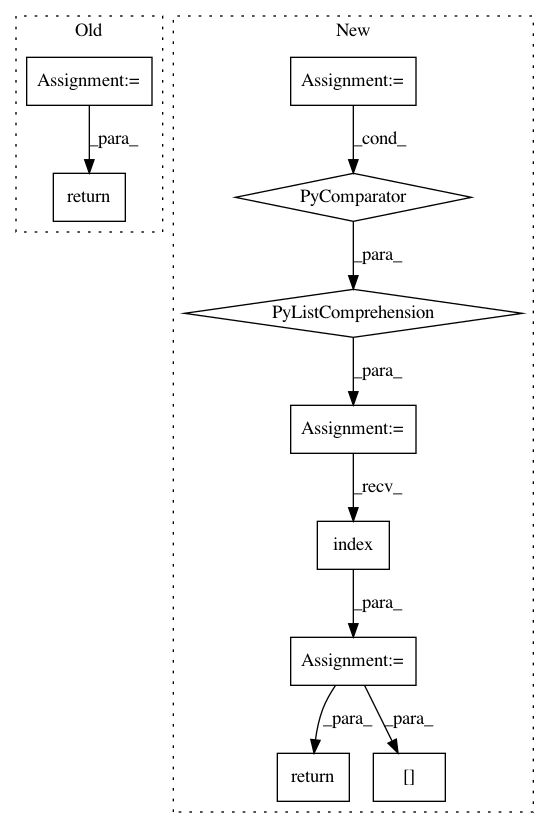

9a062c6473109dfdd545d1db84f62b5037c53128,snntoolbox/model_libs/caffe_input_lib.py,ModelParser,get_outbound_layers,#ModelParser#Any#,124
Before Change
def get_outbound_layers(self, layer):
layers = self.get_layer_iterable()
outbound = []
for outb in layer.top: // Contains only labels
for layer in layers:
if outb == layer.name:
outbound.append(layer)
break
return outbound
def parse_concatenate(self, layer, attributes):
attributes.update({"mode": "concat",
"concat_axis": layer.concat_param.axis})
After Change
def get_outbound_layers(self, layer):
layers = self.get_layer_iterable()
layer_ids = [id(l) for l in layers]
current_idx = layer_ids.index(id(layer))
return [] if current_idx + 1 >= len(layer_ids) \
else [layers[current_idx + 1]]
def parse_concatenate(self, layer, attributes):
attributes.update({"mode": "concat",
"concat_axis": layer.concat_param.axis})
In pattern: SUPERPATTERN
Frequency: 3
Non-data size: 10
Instances
Project Name: NeuromorphicProcessorProject/snn_toolbox
Commit Name: 9a062c6473109dfdd545d1db84f62b5037c53128
Time: 2017-06-13
Author: bodo.rueckauer@gmail.com
File Name: snntoolbox/model_libs/caffe_input_lib.py
Class Name: ModelParser
Method Name: get_outbound_layers
Project Name: ncullen93/torchsample
Commit Name: 72f89ffbeaad419cad9abc7c2d6a68bc1304396c
Time: 2017-04-28
Author: ncullen@modv-vlan533.0527.apn.wlan.wireless-pennnet.upenn.edu
File Name: torchsample/modules/_utils.py
Class Name:
Method Name: validate_loss_input
Project Name: ncullen93/torchsample
Commit Name: 72f89ffbeaad419cad9abc7c2d6a68bc1304396c
Time: 2017-04-28
Author: ncullen@modv-vlan533.0527.apn.wlan.wireless-pennnet.upenn.edu
File Name: torchsample/modules/_utils.py
Class Name:
Method Name: validate_optimizer_input